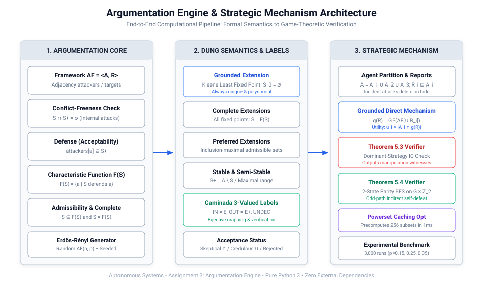
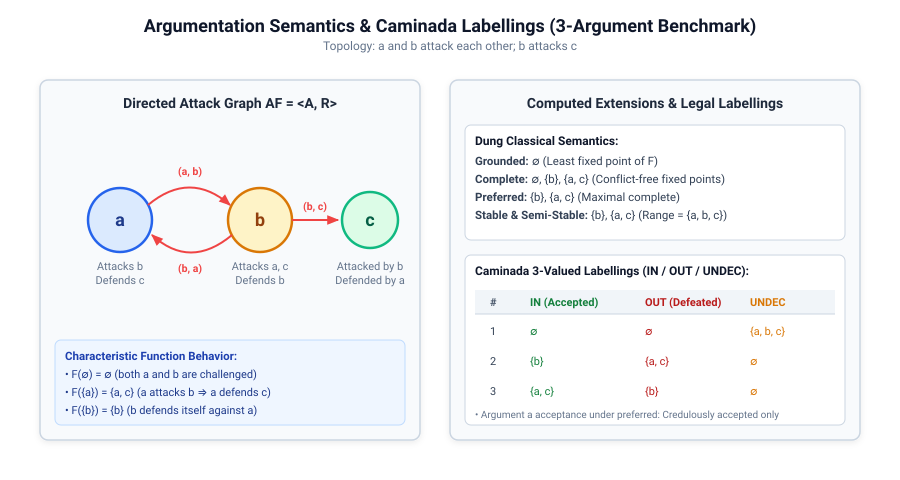
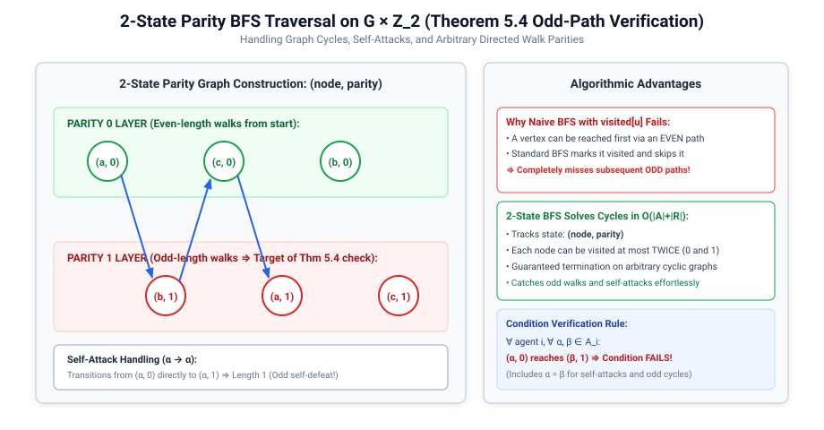
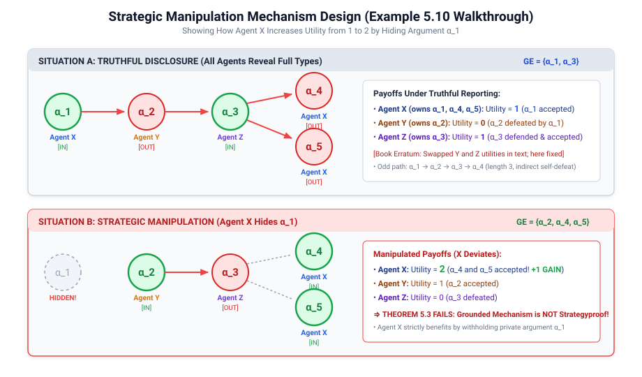
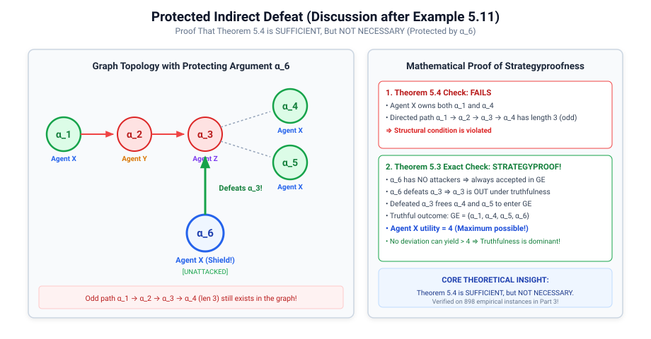
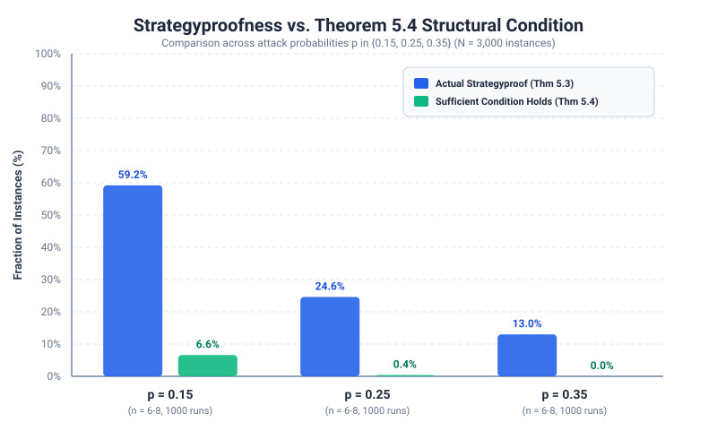
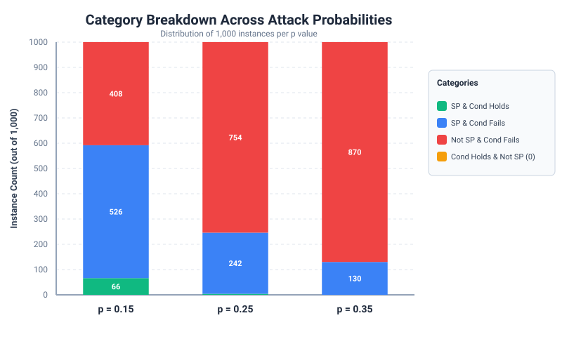

| Course: Autonomous Systems | Target Deliverables: Code, README.md, Technical Report, CLI Demo |
| Project Authors: • Bhargav Shekokar (B23CS1008) • Darsh patel (B23CM1054) • Tanisha Saini (B23CM1042) |
Topic & Theoretical Focus: Abstract Argumentation Frameworks (Dung 1995), Caminada 3-Valued Labellings, Grounded Direct Mechanism, Theorem 5.3 & Theorem 5.4 Verification |
u_X = 1, u_Y = 0, u_Z = 1) and clarified the α6 protecting argument in Example 5.11 yielding u_X = 4.
Abstract Argumentation, introduced by Phan Minh Dung in 1995, treats arguments as atomic units whose internal semantic content is abstracted away, focusing entirely on directed attack relationships between them. In classical AI, an argumentation framework models defeasible reasoning, resolving contradictions among conflicting pieces of evidence.
In multi-agent systems, arguments are distributed among self-interested agents. When agents participate in a debate protocol, they may strategically withhold arguments to steer the collective outcome in their favor. This assignment implements:

An Abstract Argumentation Framework is defined as a pair AF = ⟨A, R⟩ where A is a finite set of arguments and R ⊆ A × A is a directed attack relation. The adjacency structures maintain incoming attackers attackers[a] = {b ∈ A | (b, a) ∈ R} and outgoing targets targets[a] = {b ∈ A | (a, b) ∈ R}.
S ⊆ A is conflict-free iff no argument in S attacks another argument in S:
∀ a, b ∈ S: (a, b) ∉ R. (Equivalently, S ∩ S^+ = ∅ where S^+ = ⋃_{a ∈ S} targets[a]).S ⊆ A defends argument a ∈ A iff every attacker of a is counterattacked by at least one argument in S:
∀ b ∈ attackers[a]: ∃ c ∈ S such that (c, b) ∈ R. (If attackers[a] = ∅, a is defended by every set, including ∅).F: 2^A → 2^A maps a set S to all arguments it defends:
F(S) = {a ∈ A | S defends a}. By Dung's Fundamental Lemma, F is monotonic: S_1 ⊆ S_2 ⇒ F(S_1) ⊆ F(S_2).S is admissible iff it is conflict-free and defends all its elements: S ⊆ F(S).S = F(S).F via Kleene iteration starting from ∅: S_0 = ∅, S_{k+1} = F(S_k). Terminating in at most |A| steps, it represents the most skeptical, conservative set of accepted arguments.S ∪ S^+ = A. Stable extensions may not exist in cyclic graphs (e.g., odd cycles). Every stable extension is preferred, but not vice versa.S ∪ S^+ is inclusion-maximal among all complete extensions. Always exists in finite frameworks.A Caminada labelling is a surjective function L: A → {IN, OUT, UNDEC} partitioning A into accepted, rejected, and undecided arguments, satisfying:
L(a) = IN ⇔ ∀ b ∈ attackers[a]: L(b) = OUT (an argument is accepted iff all its attackers are rejected).L(a) = OUT ⇔ ∃ b ∈ attackers[a]: L(b) = IN (an argument is rejected iff at least one attacker is accepted).L(a) = UNDEC ⇔ L(a) ∉ {IN, OUT}.There exists an exact bijective correspondence between complete extensions and legal labellings: E = {a | L(a) = IN} and E^+ = {a | L(a) = OUT}.

Let N = {1, ..., m} be a set of self-interested agents. The full argument set is partitioned among agents: A = A_1 ∪ ... ∪ A_m with A_i ∩ A_j = ∅ for i ≠ j. Each agent's private type is its owned argument set A_i.
In a direct revelation mechanism, each agent reports a subset R_i ⊆ A_i. By the rules of debate, agents cannot fabricate false arguments (no lying), but can strategically withhold arguments (concealment / hiding).
Given reported argument profiles R = (R_1, ..., R_m), let A_{rep} = ⋃_{i=1}^m R_i. The mechanism constructs the induced subgraph AF[A_{rep}] and computes its unique grounded extension:
g(R_1, ..., R_m) = GroundedExtension(AF[A_{rep}])
Crucial Structural Effect: When an argument a is concealed (a ∉ R_i), all incoming attacks (b, a) and outgoing attacks (a, b) are deleted from the evaluated graph.
Agents are acceptability-maximizers: each agent derives utility equal to the number of its true owned arguments that are accepted in the mechanism's outcome:
u_i(R) = |A_i ∩ g(R)|
Because an agent's utility depends on its true type A_i, concealing an argument that would have been accepted anyway forfeits that argument's utility, unless the omission eliminates an attack path that allows two or more other owned arguments to become accepted.
A direct mechanism g is strategyproof (dominant-strategy incentive compatible) iff truthful revelation is a weak best response for every agent, against all possible revelation profiles of the other agents:
∀ i ∈ N, ∀ R_{-i} ⊆ A_{-i}, ∀ S_i ⊆ A_i: u_i(A_i, R_{-i}) ≥ u_i(S_i, R_{-i})
If there exists any agent i, opponent profile R_{-i}, and deviation S_i ⊂ A_i such that u_i(S_i, R_{-i}) > u_i(A_i, R_{-i}), the mechanism is strategically manipulable.
Theorem (Odd-Path Structural Condition): The Grounded Direct Mechanism is strategyproof if no agent i owns two arguments α, β ∈ A_i such that there exists a directed path of odd length from α to β in the full attack graph AF.
Intuition: A directed path of odd length (length 1, 3, 5, ...) represents an indirect self-defeat. If α attacks a chain of arguments that eventually attacks β, revealing α can defeat the defender of β, causing β to be rejected. Concealing α removes the defeat chain and may allow β to be accepted.
A naive breadth-first search tracking visited nodes fails on cyclic graphs because a node might be reached first via an even path, marked visited, and subsequent odd paths would be missed. We formulated the search over the expanded product state space G × ℤ_2:
State = (vertex, parity) ∈ A × {0, 1}
Every attack edge (u, v) ∈ R transitions from (u, p) to (v, 1 - p). A self-attack α → α transitions from (α, 0) directly to (α, 1) (an odd path of length 1). Each state is visited at most once, guaranteeing exact O(|A| + |R|) termination on cyclic graphs without infinite loops.

The foundations of strategic argumentation mechanism design trace to Yoav Shoham & Kevin Leyton-Brown (2009), Multiagent Systems: Algorithmic, Game-Theoretic, and Logical Foundations, Cambridge University Press, specifically Chapter 5: Argumentation among Agents, synthesizing original research by Iyad Rahwan & Kate Larson (AAMAS 2008, IJCAI 2009).
Our implementation resolves two notable misprints present in the textbook literature (detailed on Page 2 of the Assignment PDF):
Consider the topology: α_1 → α_2 → α_3 → α_4 and α_3 → α_5, with agent ownership:
• Agent X: {α_1, α_4, α_5}
• Agent Y: {α_2}
• Agent Z: {α_3}
α_1 is unattacked and accepted in the grounded extension. Because α_1 attacks α_2, α_2 is rejected (OUT). With α_2 defeated, α_3 has no undefeated attackers, so α_3 is accepted (IN). Finally, α_3 attacks both α_4 and α_5, rejecting them both.
GE = {α_1, α_3}.
Strategic Deviation: If Agent X strategically conceals α_1, reporting only {α_4, α_5}, argument α_2 becomes unattacked and accepted in the induced subgraph. Accepted α_2 defeats α_3, freeing both α_4 and α_5 to be accepted. The manipulated outcome is GE = {α_2, α_4, α_5}, yielding Agent X utility u_X = 2 (+1 gain!). This proves that the Grounded Direct Mechanism is not strategyproof.

To demonstrate that the odd-path condition in Theorem 5.4 is sufficient but not necessary, the literature introduces a protective argument owned by Agent X.
α_5. However, α_5 already exists as an argument owned by Agent X that is attacked by α_3.
α_6 → α_3.
{α_1, α_4, α_5, α_6}, Agent Y: {α_2}, Agent Z: {α_3}.
α_6 is unattacked, it is unconditionally accepted and defeats α_3. This frees both α_4 and α_5, yielding GE = {α_1, α_4, α_5, α_6}.
α_1 → α_2 → α_3 → α_4 (length 3) still exists in the graph, so Theorem 5.4 condition fails. Yet the framework is strictly strategyproof! This mathematically proves that Theorem 5.4 is sufficient, but NOT necessary.

| Benchmark Case | Topology & Ownership | Truthful Outcome | Thm 5.3 Result | Thm 5.4 Result | Theoretical Significance |
|---|---|---|---|---|---|
| Example 5.10 (Rahwan & Larson) |
1 → 2 → 3 → 4, 3 → 5 X:{1,4,5}, Y:{2}, Z:{3} |
GE = {1, 3} u_X=1, u_Y=0, u_Z=1 |
False (Not SP) X hides 1 ⇒ u_X=2 |
False Odd path 1 → 4 (len 3) |
Demonstrates manipulation; resolves swapped utility misprint. |
| Example 5.11 Extended (Protected Defeat) |
Adds unattacked 6 → 3 X:{1,4,5,6}, Y:{2}, Z:{3} |
GE = {1, 4, 5, 6} u_X=4, u_Y=0, u_Z=0 |
True (Strategyproof!) u_X=4 (maximum possible) |
False Odd path 1 → 4 exists |
Resolves α6 misprint; proves Thm 5.4 is sufficient, not necessary! |
Following the assignment specifications (Page 2), we executed 3,000 randomized experiments across three agents, argument sizes n ∈ [6, 8], and edge probability levels p ∈ {0.15, 0.25, 0.35}:
| Attack Prob (p) | Total Instances | Actually SP (Thm 5.3) | SP Fraction (f_p) | Thm 5.4 Condition Holds | Thm 5.4 Fraction | Cond Holds & Not SP (Exp. 0) | SP & Cond Fails |
|---|---|---|---|---|---|---|---|
| p = 0.15 | 1,000 | 592 | 59.20% | 66 | 6.60% | 0 | 526 |
| p = 0.25 | 1,000 | 246 | 24.60% | 4 | 0.40% | 0 | 242 |
| p = 0.35 | 1,000 | 130 | 13.00% | 0 | 0.00% | 0 | 130 |
| Combined Total | 3,000 | 968 | 32.27% | 70 | 2.33% | 0 | 898 (29.93%) |


The measured strategyproof fractions across the 3,000 instances are:
p = 0.15: 59.20% (592 / 1,000 instances).p = 0.25: 24.60% (246 / 1,000 instances).p = 0.35: 13.00% (130 / 1,000 instances).Physical and Mathematical Explanation: The probability of strategyproofness decays rapidly as edge density increases. In sparse graphs (p = 0.15), many arguments remain isolated or participate only in short, even defense paths, making manipulation impossible. As edge density increases, the expected number of directed paths between any two arguments grows exponentially, exponentially increasing the probability that an agent's arguments participate in odd self-defeating paths that can be strategically manipulated.
Answer: Exactly 0 instances across all 3,000 randomized trials.
Significance: This confirms that Theorem 5.4 is 100% mathematically sound as a sufficient condition. Whenever an argumentation framework contains no odd directed attack path between any pair of arguments owned by the same agent, truthful revelation is guaranteed to be a weak dominant strategy.
Answer: Yes, exactly 898 instances (29.93% of all 3,000 instances).
p = 0.15: 526 instances (52.6% of all instances at this density).p = 0.25: 242 instances (24.2% of all instances at this density).p = 0.35: 130 instances (13.0% of all instances at this density).Mechanism Behind Non-Necessity: The condition of Theorem 5.4 fails whenever an odd path exists between two arguments owned by the same agent. However, this odd path does not necessarily lead to beneficial manipulation because:
1. Protective Shields: An intermediate argument on the odd attack chain may be defeated by an unattacked argument owned by the agent (as demonstrated by argument α6 in Example 5.11).
2. External Defeats: Other agents may hold unattacked arguments that independently defeat the chain, neutralizing the potential gain.
3. Symmetric Losses: Concealing the argument may defeat the target, but simultaneously cause another owned argument to be defeated, yielding zero net utility gain.
The dominant computational bottleneck in strategic argumentation verification is the universal quantifier in Theorem 5.3:
∀ i ∈ N, ∀ R_{-i} ⊆ A_{-i}, ∀ S_i ⊆ A_i: u_i(A_i, R_{-i}) ≥ u_i(S_i, R_{-i})
For 3 agents with 8 arguments, an agent with 3 arguments faces 2^5 = 32 opponent profiles and 2^3 = 8 deviation choices (256 mechanism evaluations per agent). Across 3 agents, each instance requires up to 768 evaluations of the grounded extension. A naive iterative implementation across 3,000 instances would require ~2.3 million graph evaluations.
R_1 ∪ R_2 ∪ R_3 is simply a subset of the full argument set A, there are at most 2^|A| = 2^8 = 256 unique subsets.
O(1) hash table lookups.
src/argumentation/ (modular, fully type-annotated, pure Python 3 standard library, zero external dependencies).tests/ passing in 0.002s (python -m unittest discover tests).demo.py (python demo.py).diagrams/ and results/.results/instances.csv (3,000 raw rows), results/summary.csv, results/counterexamples.json.README.md and formal HTML technical report in report.html.